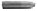

6. BÖLÜM
Cebimden sigara paketini çıkardım. İçindeki son sigarayı dudağıma iliştirdim. Paketi buruşturup Quaresma’nın topuk pası benzeri bir hareketle otoparkın sınırlarını belirleyen tel örgünün dibinde birikmiş çöp yığınına doğru yolladım. Sigaramı yaktım.
Ortalıkta polis araçları falan görünmüyordu.
Tempomu ağırlaştırarak kaldırımda yürümeye devam ettim. Köşedeki levhaya göre Beşiktaş’a doğru yürüyordum. Ama önce Fulya vardı.
Dünyada karıştığı cinayetin ayrıntılarını akşam televizyondan, ertesi gün gazetelerden öğrenecek olan tek özel dedektifin ben olduğumu düşünerek ilerledim. Yatakta yatan adamın adını, mesleğini, evinde bulunduğu genç kadınla ilişkisinin boyutunu benim yerime polisler, acar muhabirler bulup çıkaracaktı. Ben onlardan öğrenecektim. Kendi gözlerimle gördüklerimle birleştirecektim.
Hadi bakalım.
Caddeye indim. Arka arkaya dizilmiş, okulların dağılma saatini bekleyen öğrenci servislerinin önüne geçtim. Yukarıdan gelen ilk boş taksi ya tipimi ya sigaramı beğenmedi, geçti. Sonraki durdu.
Arkaya geçtim.
“Taksim,” dedim.
“Sigara abi,” dedi. “Söndürsen. Vallaha ceza yazıyorlar.”
“Tamam koçum,” dedim.
Taksim Meydanı’nda inene kadar etrafı seyrettim. Buradan bakınca İstanbul’un keyfi yerindeymiş gibi görünüyordu. Kimse kimseyi vurmuyordu. Kimse kimseye sapı güçlendirilmiş bisturiyi gösterip cep telefonunu istemiyordu. İşler yolunda gibiydi.
Kalabalığı içim çekmediği için Fransız Konsolosluğu’nun vize kapısının sokağından saptım. Devasa demir kapının önü boştu. Umumi tuvalet tarafına hiç bakmadım. Aşağıdaki sokaktan sola döndüm, adını vermeye utandığım otelime doğru yürüdüm.
Resepsiyon boştu. Otelin gündüz nöbetçisi, gece nöbetçisi, concierge, muhabbet tellalı, uyuşturucu dağıtımcısı, icabında polis muhbiri Emre Yeğenoğlu’nun bütün gün seyrettiği küçük televizyon kendi kendine konuşuyordu. Yırtıklarından alttaki beyaz dolgu maddesi görünen deri koltukların pencere yanındakine oturdum.
Biraz yoruldum mu diye sordum kendi kendime. Taksim otel yürüyüşünden değil. Bütün gün olanlardan. Haftalar boyu yalnızca boğazımdan aşağı biraz yiyecek ve alkol dökmek için çıkmıştım dışarı. Beynim uyuşuk, dolaşıyordum. Bir tek Emre Yeğenoğlu’yla konuşuyordum. Uzun boylu zekâ gerektirmiyordu bunu yapmak. Esprilerine gülüyordunuz, mesele halloluyordu.
Emre Yeğenoğlu resepsiyon masasının arkasındaki kapıdan çıktı. Kemerini sıkıyordu. Sağa sola baktı. Beni gördü. Gülümsedi kendi kendine. Geriye döndü. Kapıdan içeri doğru seslendi.
“Gel, gel...”
Kapıdan civciv sarısı saçları ve göbeğini açıkta bırakan bluzuyla nerede görseniz tanıyacağınız bir kadın çıktı. Belden aşağısını tabak gibi ortada bırakan pembe bir tayt giymişti. Kolunda gece ışıklarında yıldız gibi parlayacak boncuklarla süslü bir çanta vardı.
Bana baktı bakmasına ama üstümde durmadı. Taytını yukarı çekti boştaki eliyle.
“Hadi bebeğim, bay bay!” dedi otelin camı kırık kapısından çıkarken.
Emre Yeğenoğlu bana baktı. Suratında muzaffer bir sırıtışla. Sesimi çıkarmadım. Tezgâhın arkasındaki yerine oturdu. Televizyona bir göz attı. Gördüğünü beğenmemiş gibi suratını ekşitti. Göremediğim bir şeylerin yerini değiştirdi tezgâhın arkasında. Kapıdan dışarı baktı.
Sonra bana döndü.
“İki mesajın var Remzi Abi,” dedi. “Bak buraya yazdım. Hadi iyisin. Arayanlardan biri kadın.”
Rusya turlarıyla meşhur bir turizm şirketinin adı yazılı küçük not kâğıtlarını tezgâhın üzerinden almam için uzattı. Ayağa kalktım. Kâğıtları elinden aldım.
Üst kata giden merdivenlere doğru ilerledim.
“Remzi Abi!” diye seslendi arkamdan.
Döndüm.
“Sende bir değişiklik var bugün Remzi Abi,” dedi. “Ne ayak?”
Yüreğimin hopladığını nereden anladı diye düşündüm cevap vermek için geriye dönerken. Emre Yeğenoğlu’na baktım ne demek istediğini açıklasın diye.
“Yani, Remzi Abi,” dedi. “Arayanlardan biri kadın deyince o Remzi Abi gitti, başka bir Remzi Abi geldi yüzüne, ondan şey ettim. Hani tıraş mıraş olmuşsun...”
Epey bir zamandır ortada olmayan Remzi Ünal’ın nerelerden çıkıp geldiğini ona anlatmamın pek gereği yoktu. Bir an, ama kısacık bir an umutlandığımı ama araması beni mutlu edecek kadının bu gariban otelin telefonunu bilmediğini iki salise sonra hatırladığımı itiraf etmenin de.
Omuzlarımı silktim yalnızca cevap yerine. Döndüm.
Merdivenlerin birinci katını çıkarken ilk nota baktım. Kadının adını doğru yazmıştı. Yanında saat bilgisi vardı. Evden çıktıktan sonra, belki bir taksiye atlayıp Beşiktaş’a inerken aramış olabilirdi beni. Olan biteni biraz sindirdikten sonra. Zaman aralığı böyle söylüyordu. Bu telefonun söylediği başka bir şey daha vardı. İki kızın gözünde de geçmiş olmalıydım güven sınavından.
Bu iyi dedim kendi kendime. Sivaslı’dan doğru dürüst bir bilgi edinememiştim. Kerestelere indirdiğim iki üç darbe karşılığında biraz güven fena alışveriş sayılmazdı.
Hayat böyleydi işte, bir şey verirsen o da bir şey verirdi sana. Kesin verirdi.
Emre Yeğenoğlu tırnak içine almıştı Begüm Kalyon’un söylediklerini. Yazısı doktor yazısından biraz daha halliceydi ama okunuyordu.
“Remzi Bey, teşekkür ederim. Lütfen bu akşamüstü saat beşte Profilo’daki Starbucks’a gelin. Sizinle konuşmak isterim.”
Saatime baktım. Vaktim vardı. Epeyce vaktim vardı.
Odamın önüne gelene kadar öteki kâğıda bakmadım. Hafif gülümseyerek yürüdüm eprimiş halılı koridorda. Hayat bir değil iki şey vermişti. Daha iyi dedim kendi kendime. Birtakım önemli sorulara cevap alabilirdim belki. Alsam iyi olurdu. Almalıydım.
Kapımın önünde dikilip ikinci not kâğıdını okudum. Aynı düzendeydi. Arayan Kemal Arsan’dı. Manhattan Medical’den ayrılıp taksiye bindiğim sıralarda aramıştı. Aynı elyazısı şöyle diyordu:
“Bir gelişme olup olmadığını merak ettim. Olursa bildirir misiniz?”
Anahtarımı kilide sokarken, “Oldu!” dedim kendi kendime kocaman bir ünlemle. Hem de nasıl.
İçeri girdiğimde odam gözüme ilk kez bu kadar sefil gözüktü. Geceler boyu manasız varlığımı taşıyan yatak düzeltilmişti düzeltilmesine ama üzerinde rakı ve soğan kokulu nefesimi taşıyordu sanki hâlâ. Sağa sola attıklarım hizaya gelmişti. Açık bırakılmış pencereden şehrin arka bahçesinin sesleri geliyordu. Üst ve yan odalardan sesler gelmesi için daha erkendi.
Üzerimdekileri hızla çıkardım. Biriyle beraber girsek sığamayacağım banyoya attım kendimi. Hırsla yıkandım. Önce dayanabildiğim kadar sıcak, sonra soğuk suyla. Dirildim. İyi dirildim.
Çıkınca üstümde yalnızca düzineyle aldığım yeni donlardan biri, yatağın üzerine oturdum. Cebimdekileri koyduğum komodinin üstündeki telefonun ahizesini elime aldım. Derin bir nefes aldım, bıraktım. Sonra tuşladım Kemal Arsan’ın cep telefonunu.
Hemen açıldı.
“Doktor Kemal Arsan,” dedi telefondaki ses.
“Benim,” dedim. “Remzi Ünal. Aramışsınız.”
“Evet, evet,” dedi Kemal Arsan sesinde belirgin bir heyecanla. “Var mı bir haber?”
“Haber çok,” dedim.
“İyi mi kötü mü?” dedi sesimden ne anladıysa.
“Çok iyi değil,” dedim.
“Ne oldu, hayırdır?”
“Telefonda anlatmasam...” dedim.
“O kadar kötü mü?” dedi.
Adını bilmediğim bir genç adamın ölümünü hafifletecek bir anlatım biçimi bulamadım elbette. Konuyu değiştirmeyi tercih ettim.
“İyi haberim de var,” dedim. “Begüm Hanım’ı bulma ihtimalim var.”
“Ne demek ihtimalim var?” dedi Kemal Arsan.
Akşamüstü buluşacağımı söylemek istemedim. İşimi böyle kolaylıkla yaptığım izlenimini edinmesi işime gelmezdi. Sonra birtakım pazarlıklara yol açabilirdi.
“İşler yolunda giderse bulabileceğim, demek,” dedim.
Karşıdan cevap gelmedi bir an. Bekledim.
Kemal Arsan tereddüt ifade eden duraksamalarla konuştu.
“Remzi Bey...” dedi. “Bir cep telefonu alsanız? Haber vermeniz daha hızlı olurdu önemli bir şey olduğunda.”
“Bulduğumda Begüm Hanım’ın telefonundan haber veririm,” dedim. “Numaranızı silmediyse.”
Galiba sinirlendi. Sesine aniden hâkim olan titremeden anladım bunu.
“Tamam, tamam,” dedi. “Bekliyorum haber. Kolay gelsin.”
Sonra hat kesildiğinde duyduğunuz kesik biplemelerle baş başa kaldım. Ahizeyi yerine bıraktım.
Komodinin üstündeki saatime baktım. Zamanım vardı. Epeyce.
Bir günde iki antrenmana katılan birisinin yapacağı en akıllıca şeyi yapmaya karar verdim. Pencere hâlâ açıktı, üzerine nevresim geçirilmiş ince battaniyenin altına kıvrılıverdim.
Bir kere daha haklı çıkmıştım. Rakı ve soğan kokuları hâlâ yastıktaydı.

Pencereden gelen bağrışmalarla uyandım. İki kadın kavga ediyordu. Sokağın kadınlarıydı galiba. Öyle tiz seslerle bağırıyorlardı ki, kavganın konusunu anlayamadım. Saate baktım. Zamanıydı. İçimden teşekkür ettim kadınlara.
Yüzümü yıkadım. Giyindim. Evde olsam kahve içerdim.
Koridorlardan, merdivenlerden daha önce hiç yürümediğim kadar tempolu yürüdüm. Birbiri ardına dizilen kapıların arkasında kimlerin olduğuna akıl düşürmeden. Starbucks’ın kapısının ardında ne bulacağımı merak ediyordum yalnızca.
Emre Yeğenoğlu yerindeydi. Gözünü televizyondan bana çevirdi. Galiba bir evlilik programı izliyordu.
“Vay, Remzi Abi,” dedi. “Randevuya ha! Güzel mi bari kadın?”
Cevap vermedim. Begüm Kalyon’un yüzü hakkında bir fikrim vardı ama karşımda otururken daha dikkatli bakacaktım.
Adını vermekten utandığım otelin camı kırık kapısından çıktım. Kavga eden kadınlar ortalıkta yoktu. Yürüdüm. İlk sokaktan aşağı, Tarlabaşı Bulvarı’na doğru yöneldim. Ağır ilerleyen trafiği muhtemel yolcuların gözüne bakarak daha da ağırlaştıran taksilerden ilk rastladığıma bindim.
Bu taksicinin kendisi de sigara içiyordu. Ona katıldım.
Açtığım pencereden giren havanın tazeliğini yol boyunca kirlettik taksiciyle beraber. Allahtan radyosunda abuk sabuk şeyler çalmıyordu. Birbirimize lafla dokunmadan sessizce ilerledik. İkimizin de düşünecek şeyleri vardı demek ki.
Profilo Alışveriş Merkezi’nden yüz metre önce indim taksiden. Ritmik adımlarla ilerledim. Yürürken olabildiğince derin nefesler aldım, verdim. Girişteki metal dedektörünün önünde kuyruk vardı. Ergen kızların oğlanların arkasında bekledim. Cihazdan geçerken biplemedim. Elime broşür tutuşturmaya çalışan hayattan bezmiş delikanlıyı bir vücut çalımıyla geçtim. Starbucks’tan içeri girdim.
Doluydu.
Oturacak bir yer arıyormuş gibi her masaya bakarak ilerledim. İkiden fazla kadının oturduğu masaları, koltukları hızla geçtim. Tek başına oturan iki kadın vardı ama aşağı yukarı aynı yaşlarda olduğumuz için birbirimizi heyecanlandırmadık. Salonun dibine kadar gittim. Milletin keyfi yerindeydi ama benimki kaçmaya eğilim göstermeye başlamıştı.
Begüm Kalyon olabilecek tek başına bir kadın yoktu. Firdevs Işın’la karşı karşıya ya da yan yana oturan bir kadın da yoktu.
Saatime baktım. Biraz daha bekleyebilirdim. Kadınlar randevularına gecikebilirdi. Begüm Kalyon’un dakik birisi olup olmadığını henüz bilmiyordum.
Profilo Starbucks’ın ortasında, çıtır sevgilisi buluşmaya gelmemiş orta yaşlı bir çapkın gibi kalakaldığımı hissettim. Begüm Kalyon içerideyse gözden kaçırma ihtimalim yoktu, onu biliyordum. Dört beş saat önce olanlara bakılırsa benimle görüşmek isteğinin hakiki olduğunu da tahmin edebiliyordum. Ama yoktu.
Bir yandan gözlerimle oturabileceğim boş bir yer ararken, servis bankosuna doğru ilerledim. Önümdekini beklerken karşımdaki kahve seçeneklerine baktım.
Kahvemi söyledim saçları gözünün üstüne düşmüş kıza. Adımı sorduğunda, “Murat Davman,” dedim. Nasıl olsa okumamıştı Ümit Deniz’i. Teslimat kuyruğunda beklerken gözüm kapıdaydı.
Kahvemi alıp gözüme kestirdiğim boş masaya oturdum. Yanımdaki masada oturan adamın bütün benliği önündeki laptoptaydı. Ne yaptığı bulunduğum açıdan görünmüyordu. Arkamda iki kadının dedikodularını duyabiliyordum oysa. Konu daha ince sesli olanın erkek arkadaşının attığı edepsiz telefon mesajlarıydı.
Sıcak ama çok sıcak kahvemden dikkatle öksüz bir yudum aldım. Burada sigara içilmiyordu.
Gözüm kapıdaydı.
Gelip gelmeyeceği belli olmayan insanları ne çok beklediğimi düşündüm. Ya kahve ya sigara olurdu elimde, ya da ikisi birden. Arabanın içinde oturduğum da olurdu, çöp konteynerlerinin yanı başında dikildiğim de. Önümden ordular da geçerdi, sekiz dakikada bir kişi de.
Beklerdim.
Bazen içimden sayardım beklerken. Yüze kadar, iki yüze kadar, üç yüze kadar. Önü sonu belirsiz bir zamanı dilimlere böler, her birini tek tek göğüslerdim. Biri bitince diğeri gelsin derdim. Biri biter, diğeri başlardı. Yüz sayıncaya kadar beklemek kolaydı.
Kahvemden bir yudum daha aldım.
Arkamdaki kadınlar Can Bonomo’yu çekiştirmeye başladılar sonra. Eurovision tarihimiz bilgilerini tazeledim sayelerinde. Yanımdaki laptopunu öfkeyle kapadı.
Starbucks’a girenler oldu, çıkanlar oldu. Begüm Kalyon girmedi.
Saatime bir kez daha baktım. Kahvemden başka yudumlar aldım. Begüm Kalyon gözükmedi.
Cep telefonum olsaydı arardım şimdi diye düşündüm.
Cep telefonum olsa belki beni arardı diye düşündüm sonra.
“Efendim?” dedim sonra yüzümde galiba salak bir gülümsemeyle. Cep telefonum yoktu ama cep telefonuyla konuşuyordum.
“Çoktandır görüşmüyoruz,” dedi sesini şuracıkta duysam havalara uçacağım ses.
“Evet,” dedim. “İyi olmadı bu.”
“Bence de,” dedi.
“Ne yapsak?” dedim.
“Görüşsek,” dedi.
“Ne iyi olur,” dedim.
“Neredesin?” dedi her söylenenin ardında söylenmeyeni keşfetmeye eğitilmiş ses.
Nerede olduğumu düşündüm bir an. Doğruyu söylemeye karar verdim.
“Profilo Starbucks’ta,” dedim. “Ortalıktan kaybolan birisini bekliyorum.”
“Yine mi?” dedi.
“Ne yapayım, işim bu,” dedim.
“İşini sevmiyorum,” dedi söylediklerinin arkasına söylemek istediklerini yerleştirmekte usta ses.
“Biliyorum,” dedim.
“O yüzden mi sesin soluğun çıkmıyor?” dedi.
“Yok, önceleri öfkeliydim,” dedim.
“Bana mı?” dedi.
“Sana, kendime, dünyaya,” dedim.
“Dindi mi öfken?” dedi. “O yüzden mi aramaya başladın beni?”
Son sorusuna cevap veremedim. Ellerim gitgide soğuyan kâğıt kahve bardağımda, gözlerim kapıda otururken, içeri biri tanıdığım, diğeri tanımadığım iki kişi girmişti.
Tesadüflere elbette inanmam.
Begüm Kalyon’u beklerken Starbucks’tan içeri yanında birisiyle Ayla Duman’ın girmesi tesadüf olamazdı.
Üzerinde hastanede giydiği kocaman cepli üniforma bozması yerine bileklerine kadar uzanan çiçekli bir elbise vardı. Yukarıdan aşağı dümdüz iniyordu. Saçlarını açmıştı. Omzundan açık yeşil örgülü bir çanta sarkıyordu. Manhattan Medical’deki kadar güzeldi.
Yanındaki adam babası yaşındaydı neredeyse.
İlk bakışta ince süet deriden açık kahverengi ceketi çarpıyordu. İçinde bir açık tondan yakasız bir gömlek giymişti. Ortadan açılmaya başlayan saçları yaşından beklenmeyecek kadar siyahtı. Yüzünde yaptığı her şeyden memnun adamların ifadesi vardı. Yuvarlak bir yüzün üstünde yerli yerinde olmaktan başka özellikleri olmayan gözler, kaşlar, burun, dudak. Toplamı çok sevimli bir surat ortaya çıkarmıyordu.
İçeri birisini aradıkları besbelli bakışlarla girdiler. Beni aramıyorlardı elbette, görmediler.
Tıpkı benim yaptığım gibi ağır adımlarla çevreye bakarak ilerlediler. Masamın yanına geldiklerinde gözleri başka masalardaydı. Aradığını bulmamış gözler.
“Begüm Hanım daha gelmedi Ayla Hanım,” dedim tam kız hizamdayken. “Otursanıza.”
Ayla Duman adını duyunca irkildi. Gözlerini bana indirdi. Bir kez daha irkildi kim olduğumu görünce. Omuzları gerildi.
“Buyrun, buyrun,” dedim epeydir görmediğim iki dostumu davet edercesine.
Ayla Duman çantasını bir omzundan ötekine aldı. Yanındaki adama baktı hızla, sonra bana yeniden.
“Beraber bekleriz Begüm Hanım’ı,” dedim.
Nihayet konuşabildi.
“Ne arıyorsunuz burada?” dedi. “Begüm sizi de mi çağırdı?”
Aferin ulan Remzi Ünal dedim içimden. Tutturdun.
“Beyefendi?” dedim yanındaki adama gülümseyerek. “Tanıştırmayacak mısınız?”
Ayla Duman şaşkınlığını üstünden atmayı biraz başarmıştı. Yanındaki adama döndü. Eliyle tanıştırma hareketleri yaptı.
“Remzi Bey,” dedi. “Bugün hastanedeydi. Bir çekap konuştuk. Doktor İsmet Bey. Bölüm şefimiz.”
Ayağa kalktım. Elimi uzattım adama. Kupkuruydu elleri.
“Otursanıza doktor bey,” dedim. “Lütfen.”
Ayla Duman’la doktor bakıştılar. Önce Doktor İsmet karar verdi oturmaya galiba. Ayla Duman karşıma, doktor yanıma yerleşti.
“Begüm’ü nereden tanıyorsunuz?” dedi sonra.
Hangi cevabı vereceğimi düşündüm hızla. Uslu cevap, yaramaz cevap... Birileri benden önce yaramazlığa başlamıştı, biraz da ben karıştırabilirdim ortalığı.
“Özel dedektifim ben,” dedim. “Begüm Kalyon’u müşterim adına arıyorum. Henüz tanışamadık kendisiyle ama.”
Ayla Duman hiç de şaşırmış görünmedi. Kaşları çok ama çok hafif çatıldı. Tepkisini görmek için doktora baktı.
Doktor İsmet mikroskobun camında hayatında hiç görmediği bir virüs görmüş gibi baktı bana. Sanki daha şimdiden o virüsü etkisiz kılacak ilacın terkibini düşünüyordu.
“Sizin mesleğin Türkiye’de yapıldığını duymamıştım,” dedi. Sonra Ayla Duman’a döndü. “Bunu biliyor muydun?”
Onun yerine ben cevap verdim.
“Hastanede konuşurken bilmiyordu,” dedim. “Sonradan öğrendi Ayla Hanım.”
Bir müttefik daha işime gelirdi. Ayla Duman’ın bir kıl rahatladığını sezdim.
“İşinizi böyle mi yaparsınız?” dedi Doktor İsmet bana dönüp. “İnsanları kandırarak...”
“Her zaman değil,” dedim. “Begüm Hanım’ı arayanlar çoğaldı. Bazıları tatsız tipler. Onlardan biri olmadığım belli olsun istedim.”
Ayla Duman sağ elinin iki tırnağını dişlerinin arasına aldı. Doktor ona bakmıyordu. Gözlerini bana dikip sesini hafifçe sertleştirerek sordu.
“Müşteriniz kim? Onu arayan başkaları kim?” dedi.
Elimi biraz daha açmamın hiçbir zararı olmayacağını düşündüm.
“Genellikle müşterilerimin adını vermem,” dedim. “Ama bu sefer neden aradığı o kadar anlaşılabilir birisi ki, sakınca yok galiba. Sizin doktorlardan. Kemal Arsan.”
Doktor İsmet kaşlarını çattı.
“Kemal neden arasın ki Begüm’ü?” dedi.
Bir insanın hayatını kaybettiği yerde bir başkasının patronunun canının sıkılması önemli değildir dedim kendi kendime. Bu, biraz da işime geldi herhalde.
“E, kız onun sevgilisi,” dedim.
Doktor İsmet’in dudakları büzüldü. Ayla Duman’a döndü.
“Peki, bunu biliyor muydun?” dedi.
Bir kez daha imdadına koştum kızın.
“Herkesten saklamışlar,” dedim. “Kız ortalarda görünmeyince kendisinin sormamasının sebebi de bu. Beni de bu yüzden tuttu.”
Ayla Duman gözlerime dikti gözlerini. Sebebini tam anlayamadığım bir ışıltı vardı gözlerinde. Teşekkürden öte.
“Vay,” dedi doktor. “Neler oluyor? Peki, şimdi neden çıkmadı ortaya Begüm? Kalktık geldik işte. Hadi trafik falan vardı, biraz geç geldik ama...”
Soru Ayla Duman’a idi galiba. Araya girdim.
“Sizi mi aradı?” dedim. “Ne zaman?”
“İşin bitimine yakın,” dedi Ayla Duman. Neler konuştuklarını hatırlamak ister gibi duraklayarak konuşuyordu. “Eee, ‘Konuşmamız lazım,’ dedi. ‘İşler çığırından çıktı,’ dedi. Ne olduğunu sorduğumda, ‘Starbucks’ta konuşuruz,’ dedi.”
Doktor İsmet’e doğru kafamla işaret ettim.
“Ben Begüm’le konuşurken...”
Doktor araya girdi. Galiba biraz otorite göstermek istiyordu.
“Sinem’e Begüm nerede diye sordum. Sinem başhemşiremizdir. O biraz mırın kırın etti. Ayla’ya sorayım dedim ben de...”
İkimiz de başımızı Ayla Duman’a çevirdik. Kız mecburen konuştu.
“Kapatırken adını söylememeliydim,” dedi. “İsmet Bey duydu. Artık başkasıydı diyemedim. Beraber gidelim dedi.”
“Kızın başı dertteyse yardım etmemiz gerekir diye düşündüm,” dedi Doktor İsmet. “Kalktık geldik, Begüm ortada yok.”
“Durun bakalım,” dedim. “Belki bir şeyler yapabiliriz.”
İkisi de yüzüme baktılar. Bir şeyler yapabilirsem hangisini kazanacaktım tam olarak emin değildim.
“Starbucks’ta konuşuruz, dedi değil mi?” diye başladım numaramı sergilemeye. “Hangi Starbucks olduğunu söylemediğinden emin misiniz?”
“Evet,” dedi Ayla Duman. “Hep burada buluşuruz bir şey yapmadan önce. Yaptıktan sonra. Evime yakın.”
“İyi,” dedim. “Sizi en çok kim tanıyorsa personelden, gidip sorun bir, uğramış mı kısa zaman önce. Belki görmüşlerdir.”
“Niye aklıma gelmedi bu?” dedi Ayla Duman kalkarken. “Galiba sizi burada görünce kafam karıştı.”
Cevap vermedim. Ayla Duman kahve siparişi aldıkları bankoya doğru yürüdü. Çantası sandalyesinin arkalığına takılı kalmıştı. Sanki gitmemiş gibi.
Doktor İsmet’le birbirimize baktık. Parmaklarını masanın üzerinde tıkırdattı. Gözleri kahveme takıldı.
“Bir de kimlik mi değiştiriyorsunuz?” dedi.
“Kendi kendime yaptığım bir şaka,” dedim. Madem kimliklerden söz ediyorduk, sordum. “Soyadınız ne?”
Bu da nereden çıktı der gibi yüzüme baktı. İtiraz etmedi ama.
“Günaldı,” dedi.
Aynı saçmalıkta başka bir şey soracak mıyım diye yüzüme baktı. Sordum.
“İyi bir hemşire midir Begüm Kalyon?” dedim.
Doktor İsmet Günaldı gülümsedi. Belki ilk kez, kendisiyle müşerref olduğumdan beri.
“Arada işi kırma alışkanlığı olmasa, İstanbul’un en iyisi,” dedi.
İçimin bir parça rahatladığını söylemeliyim. Dönüp Ayla Duman’a baktım.
Ayla Duman kahve siparişimi alan kızla konuşuyordu. Kız heyecanla bir şeyler anlatıyordu. Eliyle kapıyı gösterdi. İpin ucunu bulduk dedim içimden.
“Görmüşler galiba,” dedi İsmet Günaldı.
“Galiba,” dedim.
Ayla Duman kasadaki kızdan ayrıldı. Bize doğru gelmedi. Kahve almak isteyenlerin bekleştiği tarafa doğru yürüdü. Kız işi biliyor dedim içimden. Elbette biraz alırsın, biraz verirsin.
İsmet Günaldı’nın parmakları yeniden bateri çalmaya başladı masanın üstünde. Bu kez biraz daha ritmik. Daha sert.
Ayla Duman iki elinde iki kâğıt kahve bardağı oturduğumuz masaya doğru yürümeye başladı. Yüzünde beni gördüğünden daha şaşkın bir ifade vardı. Belki daha korkmuş.
Kağıt bardakları masaya koydu. Oturmadı.
“Onu götürmüşler. Muhtemelen isteği dışında,” dedi.
“Ne demek?” dedi İsmet Günaldı. Parmakları donup kalmıştı masanın üzerinde.
Denedim.
“Kel kafalı birisi mi?” dedim.
“Evet, evet,” dedi Ayla Duman. “Nereden biliyorsunuz?”
Hangi sihirbaz anlatırdı numarasının içyüzünü?
“Boş verin,” dedim. “Ne dedi kız?”
Ayla Duman iki eliyle yüzünü sıvazladı, sonra saçlarının üzerinden geçirdi ellerini.
“Begüm camın önünde oturuyormuş,” dedi. “Herhalde bizi görmek için. O adamın geldiğini görünce ayağa kalkmış. Adam yolunu kesmiş kapıda. Biraz konuşmuşlar. Adam kolunu tutuyormuş Begüm’ün. Sonra birden ikna olmuş gibi itiraz etmeyi bıraktı galiba dedi kız. Beraber çıkmışlar.”
“Otursanıza,” dedim.
“Nasıl oturayım!” dedi Ayla Duman. “O adamın, eee, Begüm’ün arkadaşı olmadığı kesin. Kim bilir kim? Bulalım onu ne olur! Korkmuştur kız.”
“Ne yapabiliriz?” dedi İsmet Günaldı.
Ne yapabiliriz diye düşündüm. Sormaktan bir zarar çıkmazdı.
“Starbucks’tan çıkınca ne tarafa gitmişler bir fikir verdi mi?” dedim. “Sağa mı, sola mı?”
“Gözleriyle takip etmiş kız,” dedi Ayla Duman. “İçeri değil, sola, dışarı gitmişler.”
Ben de ayağa kalktım.
“Deneyelim o zaman,” dedim.
“Ne deneyeceğiz?” dedi doktor.
“Soralım bir,” dedim. “Belki gören olmuştur.”
Kime soracağımızı sormadı İsmet Günaldı. Ayağa kalktı. Rahatlatmak istermiş gibi Ayla Duman’ın kolundan tuttu.
Profilo Starbucks’ın çıkışına doğru yürüdük. Masada kalan iki kahveye ne olacağını düşünmedim hiç. Nasıl olsa bana getirilmemişti.